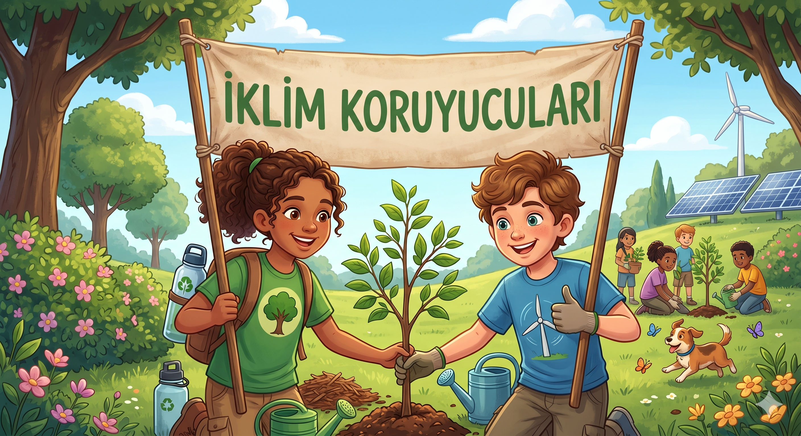

İklim Koruyucusu
Sürdürülebilir bir gelecek senin kararlarınla şekillenecek.

Doğa Bütçesi
Eko-Puan
Yeşil Kasaba Projesi
Merhaba Genç Çevre Gönüllüsü! Kasabamız iklim değişikliğinin etkileriyle karşı karşıya. Alacağın kararlarla doğayı koru, karbon ayak izini azalt ve yeşil bir gelecek inşa et!
🌱 Kararlarınla Küresel Sıcaklık Artışını tehlike sınırı olan 2.0°C'nin altında tutmalısın.
⚡ Doğru ekolojik adımlar atarak Eko-Puanını artır ve kasabayı güzelleştir.
👥 Doğa koruma önlemleri alırken Kasaba Mutluluğunu da dengede tutmaya çalış.
Oda Aydınlatması ve Enerji
Odandan ayrılırken bilgisayarının ve lambanın açık kaldığını fark ettin. Enerjiyi verimli kullanmak için ne yaparsın?
İpucu / Bilgi Notu
Fosil yakıtlardan elde edilen enerjiyi kısmak doğrudan karbon salınımını engeller.
Harika Bir Karar!
Işıkları ve cihazları kapatmak gereksiz enerji sarfiyatını engeller, elektrik üretilirken atmosfere salınan CO2 miktarını düşürür.
Tebrikler İklim Koruyucusu!
Geleceği güvence altına aldın. Kasaban artık daha yeşil ve mutlu!
T.C. Millî Eğitim Bakanlığı
İKLİM KORUYUCUSU LİSANSI
Bu lisans, iklim kriziyle mücadelede üstün çevre bilinci ve doğru kaynak yönetimi kararları gösteren kahramanımıza verilmiştir.
Haftalık Yeşil Görev Kartı
Bu görevleri gerçek hayatta tamamlayarak kendi dünyanı kurtar!